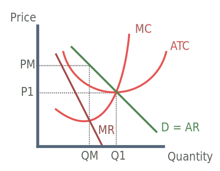

What is Contestable Market Theory?
At it's core a contestable market is one with zero entry and exit costs, meaning firms can enter and leave the market at will. A purely contestable market must also fulfil the following assumptions:
Assumptions:
Low barriers to entry
Low sunk costs
No collusion
Firms are short run profit maximisers
Homogenous product
Perfect knowledge
Diagram

If an industry becomes contestable incumbents are then fearful of hit and run entry. In order to remain conpetitive firms lower prices to the lowest possible level (P1). Quantity demanded increases to Q1 creating productive efficiency.
Criticisms of contestable market theory
In practise sunk costs are high
Technical knowledge is required to enter some markets
Established brands may still dominate the market
Incumbents may protect themselves through patents
Theory ignores aggressive action of incumbents
Methods to increase the contestability of markets
Remove legal entry barriers
Force firms to allow competitors to use network
Legislation against predatory pricing
OFT legislation of abused power